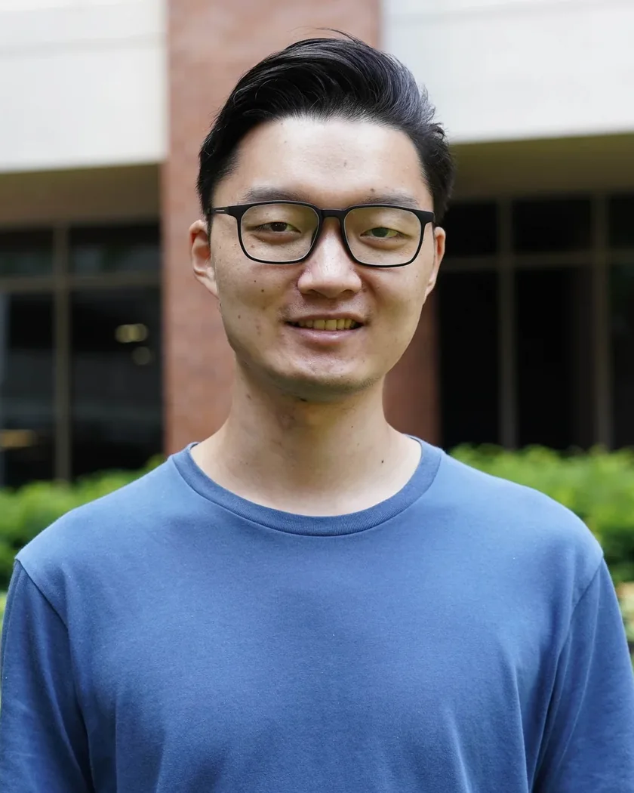

Team.

Peiyu Xu 徐沛雨
Incoming Principal Investigator
Zhejiang University School of Medicine
Peiyu Xu studies how molecular machines work and how they can be put to new use. During doctoral training with H. Eric Xu at the Shanghai Institute of Materia Medica, Peiyu used cryo-EM to study G protein-coupled receptors, a major class of drug targets, revealing how receptors for serotonin, dopamine and glycoprotein hormones recognize both natural ligands and drugs.
As a postdoc with Feng Zhang at the Broad Institute and MIT, Peiyu turned to RNA-guided systems hidden in the genomes of eukaryotes, prokaryotes and viruses. This work established Fanzor as a programmable RNA-guided endonuclease in eukaryotes and showed how members of this diverse family cut DNA. In prokaryotes and their viruses, Peiyu studied TIGR-Tas, a modular family of RNA-guided systems, and showed that it can repress gene transcription.
The Xu Lab at Zhejiang University School of Medicine brings these threads together: discovering molecular machines in nature, decoding their mechanisms and redesigning them as technologies.
Postdoc
Broad Institute of MIT and Harvard
McGovern Institute for Brain Research, MIT
Advisor: Feng Zhang2026
Ph.D.
Shanghai Institute of Materia Medica, Chinese Academy of Sciences
Pharmacology · Advisor: H. Eric Xu2021
B.S.
Jilin University
Pharmaceutical Engineering2015
Lab members
We are recruiting the founding members of the lab. See open positions.